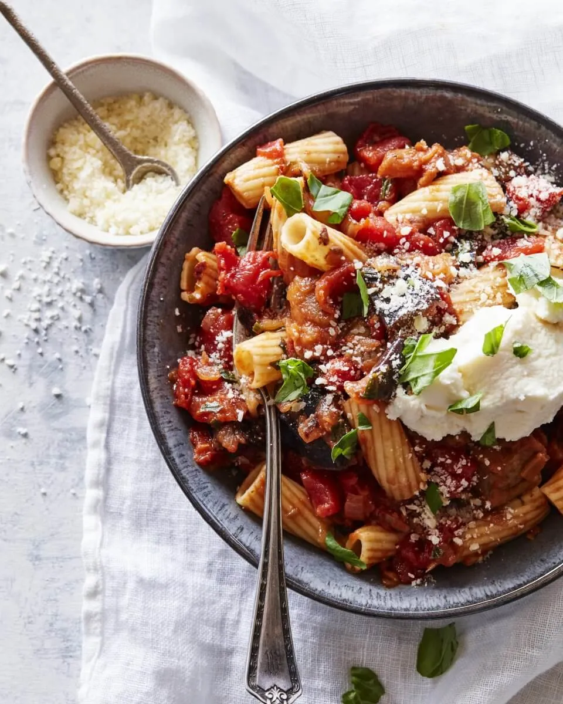

Back to recipes
Pasta alla Norma

Description
This is a classic Italian pasta dish from Sicily that was created after Bellini's opera Norma, made with fried
eggplant, tomatoes, ricotta, and fresh basil. As with many classic Italian dishes - only a few ingredients are
needed, but they should be of excellent quality.
Ingredients
- 3 eggplant
- coarse salt
- 5 tablespoons extra virgin olive oil, divided
- 1 clove garlic
- 1 (18 ounce) can whole peeled tomatoes
- salt and freshly ground black pepper to taste
- 1 small bunch fresh basil, chopped, divided
- 1 (16 ounce) package spaghetti
- 1 (8 ounce) container ricotta cheese, or to taste
Steps
- Wash eggplants, cut off the ends, and cut into 1/3-inch slices. Layer eggplant slices in a large bowl,
sprinkling coarse salt over each layer. Let sit for at least 2 hours to draw out any bitterness.
- In the meantime, prepare the tomato sauce. Heat 2 tablespoons olive oil in a saucepan over medium heat and
cook garlic until browned, about 2 minutes. Remove garlic. Add peeled tomatoes and bring to a boil; cook
until tomatoes start breaking down, about 5 minutes. Reduce heat and simmer until sauce thickens, about 20
minutes. Season with salt and pepper. Add 2/3 of the basil and simmer for another 3 minutes.
- Rinse eggplant slices under cold running water and pat dry with paper towels. Heat remaining 3 tablespoons
olive oil in a large skillet over medium-high heat and fry the eggplant slices in batches until golden
brown, 3 to 5 minutes per side. Drain on paper towels. Cut into small cubes.
- Bring a large pot of lightly salted water to a boil. Cook spaghetti in the boiling water, stirring
occasionally, until tender yet firm to the bite, about 12 minutes. Drain.
- Mix eggplant pieces into the tomato sauce. Simmer for 10 minutes over low heat. Stir in ricotta and mix
well. Season with salt, pepper, and remaining basil. Mix in drained spaghetti and cook until warm, about 3
minutes.